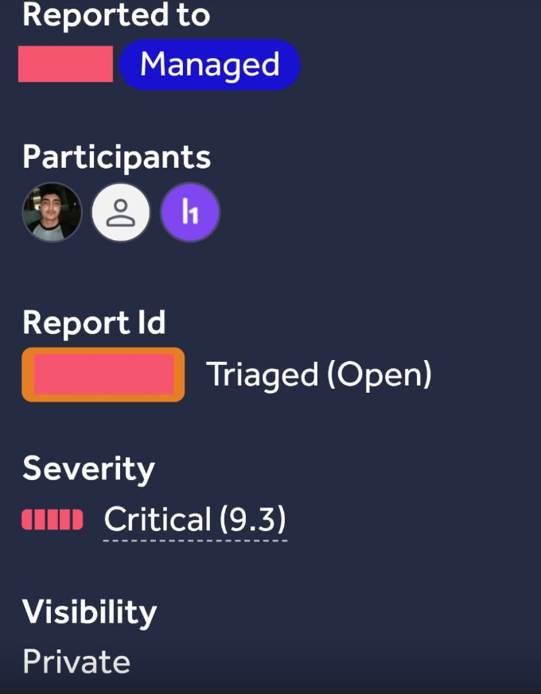

the hook
there's a question that stays in the back of my head after most engagements: what if the worst thing in an application isn't some exotic exploit, but just a debug page that nobody bothered to take down? most of the time those are harmless. sometimes they are really, really not.
this one was not.
the finding
I was doing late night recon on a veterinary practice platform - i'll just call the system PMS here. the target ran a bunch of subdomains and one of them behaved differently from the others. it returned html instead of redirecting to the login, which is almost always a dev leftover or a half-dead marketing page. I almost skipped it. seens like a waste of a click.
so of course I clicked it.
it was a debug / test interface, and it was fully functional. you could interact with the PMS the same way an authenticated user would, and the best part is the form came already pre-filled with live identifiers. real ones. the page basically printed a config dump of the whole backend to anyone with a browser:
┌────────────────────────────────────────────────────────────────────────────────────────┐
│ PMS IMPOSTER │
├────────────────────────────────────────────────────────────────────────────────────────┤
│ PMS ID │ [uuid-xxxxxxxx-xxxx-xxxx-xxxx-xxxxxxxx] │
│ Clinic ID │ [uuid-xxxxxxxx-xxxx-xxxx-xxxx-xxxxxxxx] │
│ Vet ID │ [uuid-xxxxxxxx-xxxx-xxxx-xxxx-xxxxxxxx] │
│ Pet ID │ [uuid-xxxxxxxx-xxxx-xxxx-xxxx-xxxxxxxx] │
│ Transaction ID │ [uuid-xxxxxxxx-xxxx-xxxx-xxxx-xxxxxxxx] │
│ Consultation ID │ [uuid-xxxxxxxx-xxxx-xxxx-xxxx-xxxxxxxx] │
│ PMS Internal ID │ [uuid-xxxxxxxx-xxxx-xxxx-xxxx-xxxxxxxx] │
│ User ID │ [uuid-xxxxxxxx-xxxx-xxxx-xxxx-xxxxxxxx] │
│ Country │ [XX] │
│ Timestamp │ [2026-04-XXTXX:XX:XX.XXXZ] │
│ Verification Salt │ [xxxxxxxxxxxxxxxxxxxxxxxxxxxxxxxx] │
└────────────────────────────────────────────────────────────────────────────────────────┘pms id, clinic id, vet id, pet id, transaction id, consultation id, user id, a country, a timestamp, and a verification salt. all of them real. no authentication to get here, no token in a header, nothing. I didn't have to be anyone to look at this system's entire entity model.
what it actually is
putting a label on it, this sits at the intersection of three weaknesses:
- broken access control (CWE-639) - the page requires zero authentication
- information disclosure (CWE-200) - sensitive identifiers exposed to unauthenticated users
- insecure design (CWE-697) - debug/test functionality deployed to production
I filed it with that framing and honestly I recieved the usual "low / medium, thanks" energy. which is kindof fair. exposed uuids alone are boring. every hunter has seen a million of them.
the interesting part started when I thought about what those uuids actually are.
why the ids matter: the relationships
this is the part that most people miss. in a PMS, those identifiers aren't random strings. they describe the structure of the clinic - a clinic owns vets, pets and users; a pet has consultations; a consultation has transactions. it looks like this:
┌──────────────┐
│ CLINIC │
│ (ClinicID) │
└──────┬───────┘
│
┌──────┼──────┐
│
▼
┌───────────┐ ┌───────────┐ ┌───────────┐
│ VET │ │ PET │ │ USER │
│ (VetID) │ │ (PetID) │ │ (UserID) │
└───────────┘ └─────┬─────┘ └───────────┘
│
▼
┌──────────────┐
│CONSULTATION │
│(ConsultID) │
└──────┬───────┘
│
▼
┌────────────────┐
│ TRANSACTION │
│ (TransactionID)│
└────────────────┘each uuid is a key to some api. put together, they're basically an erd of the whole platform being served for free. a pet id is data. pet id + clinic id + vet id + consultation id is an attack surface, and the debug page hands you all of them at once.
escalation #1: api mapping
first move is boring and safe - take the ids and probe the backend api. you're not breaking anything, just reading. but reading tells you what endpoints exist, and the ids you already have let you fingerprint routes you'd never guess blind:
/api/clinic/{id}
/api/vet/{id}
/api/pet/{id}
/api/consultation/{id}
/api/transaction/{id}from there you fuzz for the cousins of those paths and the api surface kind of paints itself.
escalation #2: the idor part
with working endpoints and real ids, the missing access control starts to glare. you plug a pet id from the debug page into the consultation endpoint and it happily returns that pet's consultations. the issue is there's no check at all tying the request to a session - because there isn't a session, that was the whole point of the page.
- a pet id gets you it's consultations, and the notes attached to them
- a vet id gets you schedules and vet notes
- a transaction id gets you payment history (billing data, which stung a bit)
- a user id gets you profiles to start cross-referencing against real people
the endpoint basically said "here's a key, what do you want" and never once asked who you were. classic CWE-639.
unauthenticated requests against the api using ids pulled off the debug page - no ownership check anywhere.
escalation #3: the verification salt
and then there was the field I couldn't stop staring at: verification salt, 32 chars, sitting right there in an unauthenticated response.
why would a debug page need to show the verification salt? most likely a dev logged it years ago so they could eyeball how signing worked, and it rode along to production. but whatever the reason, this is the field that moves the finding from "medium" to "critical". if token generation is weak enough for the salt to be useful - or the salt is reused, or guessable - you're not far from forging tokens for accounts whose ids are printed on the same page.
I couldn't prove full token forgery on this one, I'll be honest. but the salt format was predictable and a token-generation function was sitting in the js bundle with that exact salt shape as an input. documenting that potential is what pushed the triager to take it seriously.
escalation #4: business logic (this is where i got uncomfortable)
the debug page also had write operations wired to it - appointments, prescriptions, treatments. and the api accepted the same exposed identifiers on POSTs, not just reads.
so the theoretical chain is:
- position yourself using the exposed data (or forged tokens from the salt)
- book an appointment in someone's clinic
- write a prescription, or modify a consultation
- change a transaction, or add a medical record
you don't need to demonstrate all of this in a report. but knowing it exists is what changes the severity. injecting false medical records into a system that runs a clinic was the part that made the triager skip the duplicate button.
the payload chain
if I had to write the whole thing out as a rough script, it looks like this (obviously with the target and real data removed):
# stage 1 - recon: fingerprint the api with ids off the debug page
ids = { "clinic": "...", "vet": "...", "pet": "..." }
# stage 2 - enumeration: map relationships between entities
for entity, eid in ids.items():
r = requests.get(f"https://target/api/{entity}/{eid}", headers=bypass_headers)
if r.status_code == 200:
# now we know what connects to what
relationships[entity] = r.json()
# stage 3 - exploitation: try the salt, if its worth it
forged = generate_token(salt, user_id="...", clinic_id="...")
# stage 4 - impact: authenticated-ish call to a write endpoint
api.post("/medical-record/create",
data=malicious_record,
headers={"Authorization": "Bearer " + forged})stage 1 is recon, stage 2 turns the ids into a map, stage 3 tries to turn the salt into tokens, and stage 4 is pretty much anything the PMS lets an authenticated actor do.
the read-to-write chain: enumeration, then access, then whatever the system allows.
impact
- read-only disclosure - you can see how other clinics are structured. annoying.
- unauthorized access across domains - vet notes, billing, owner PII. worse.
- authentication compromise - if the salt forges tokens you're not "unauthorized" anymore, you're logged in. worst.
- data integrity - medical records become editable. this is the one that hammers the checkbox.
it's veterinary, but it's still healthcare. animal records don't get the same press as human ones but they sit under the same GDPR / CCPA level of sensitivity. owners trust a clinic with their pets' health. when that trust breaks it stops being a technical problem and becomes a compliance problem, and compliance problems get patched in a hurry.
medical + financial data in scope - the compliance angle is what gets it fixed fast.
the "don't just report the ids" bit
look, I get it. honestly. most hunters would've seen those ids, filed "information disclosure", taken the medium, and moved on. that's not wrong. it's just the ceiling, and a medium pays a medium.
what moved this one to high, and what moves similar ones to critical, was four small things:
- demonstrate real access. don't just screenshot the page. take an id, hit an endpoint, show what comes back. even read-only, it's access, and access reads louder than a leaked variable.
- show the relationships. a pet id is data. pet id + clinic id + vet id + consultation id is an attack surface. draw the dumb little diagram in the report, it takes two minutes in plain text.
- push the salt. if there's any chance a salt, secret or seed can generate or guess tokens, chase it. even unexploited, documenting the potential is the difference between medium and critical.
- think healthcare. medical data - even for animals - makes the compliance stakes real, and compliance is the fastest way to get a triager to sit up.
takeaway
the whole point of authorization is that there's a barrier you have to cross to touch a system. this debug page deleted that barrier entirely. it's not a bug in one endpoint - it's a complete entity map of an entire practice management system, served to anyone with a web browser.
the identifiers paint the picture. the relationships turn the picture into a blueprint. and a salt field left over from development is basically the key to the front door.

ids are a picture, relationships are a blueprint, the salt is the key.
last thing: this got patched within about a day of reporting, and the fix was "removed the page". cost the company nothing. paying attention to what your debug surfaces print is a cheap habit, and this is the case I point at whenever someone asks why I bother with these.
target and all identifiers redacted. testing was authorized and in-scope. disclosure policy is on the about page.